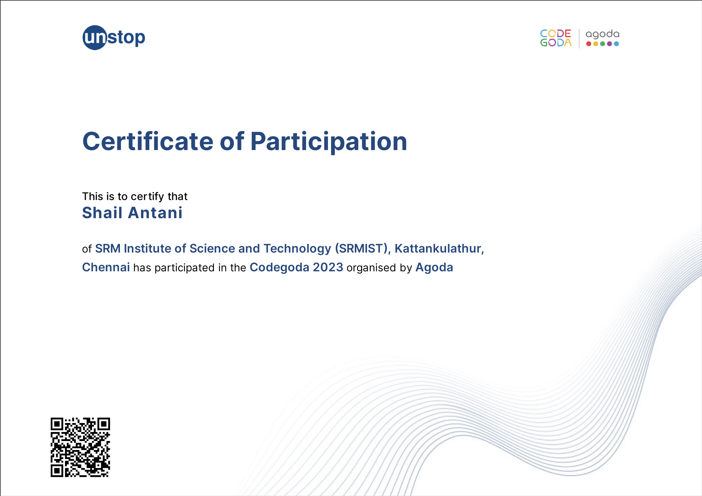
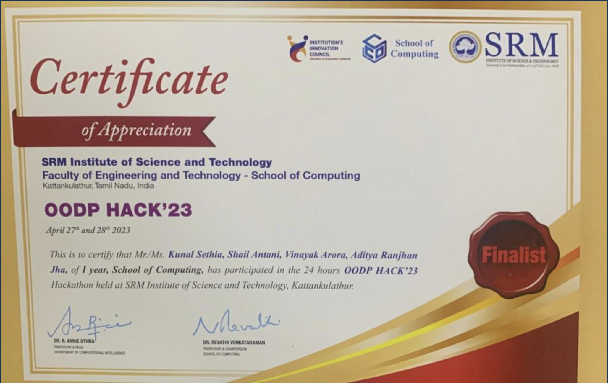

I'm Shail Antani, a computer science engineering student specializing in Software Engineering at SRM IST University.
Since I can remember, any conversation on technological and computing breakthroughs that solve problems has always been inspiring. The idea of technology and computing creating solutions to real-life problems inspires me. For specific, Android Development / iOS development particularly excite me. This bent of mind reflects my interest in Computer Programming.
Semester 1: 8.05
Semester 2: 8.65
CGPA: 8.35
Unstop Agoda Hackathon
SRM OODP Hackathon
